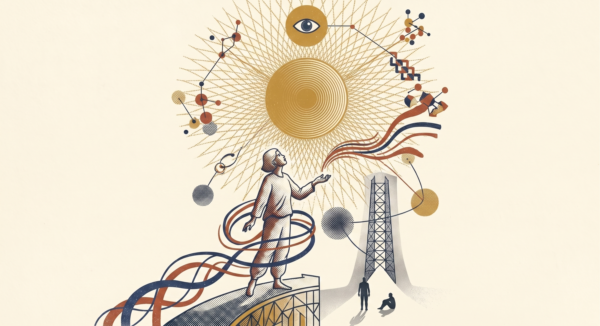

You came here because you can feel the wave. You just can't yet see your part in it. Let's go look.
You came here because your team is moving, and you want a horizon they can walk toward together.
✕ fallacy of identity Inspiration overcomes the trap of "I'm the [Excel] person. The deck person. The one who is my craft."
✕ fallacy of yesterday And the bias of "I tried it last year — it got things wrong." That snapshot is obsolete. Stay short-sighted, you lose out.
✕ fallacy of identity Inspiration overcomes the team trap of "this is just how we work — it's our culture, our process."
✕ fallacy of yesterday And the team bias when someone says "we tried it — it was wrong." That data point is obsolete. Stay short-sighted, the team loses out.

You need a north star.
Your team needs a north star they can walk toward together.
Stop asking what to learn.
Help them stop asking what to learn.
Ask what to become.
Show them what to become.
Something nagged at you. A friend mentioned an agent that ran a twenty-minute task you used to spend Tuesdays on. A clip on your phone showed someone build a working app over coffee. "AI did what?" — and you went back to your desk, and the spreadsheet looked smaller than it did yesterday.
That feeling — the one between fear and curiosity — is the most useful sense you have right now. Don't make it go away. Aim it. Most of the noise reaching you treats AI like one more tool to learn. The better question is what you'd ask of it if you actually let yourself want bigger things.
That's a north star. The version of your work that's still ahead of you — the one you only ever saw in flashes. Imagine if the deck you mocked up in your head twelve times finally got built. Imagine if the novel you've been not-writing for ten years gets written this fall. Imagine if the side project you've been carrying around becomes the thing your career was actually pointing at.
And once you let yourself want it — remember what's on the other side of the screen. The best coder you know. The best mathematician. The best project manager, MBA, accountant, lawyer. The best writer, editor, proof-reader. The best at remembering history, trivia, the names of every B-side from 1974. The best at staring at a hundred-page deck or a quarter of spreadsheet data and seeing the pattern. All of it. At once. In one window. For most people, AI is already better than each of those roles individually. Taken together — nobody beats it. The question isn't whether you're qualified to ask for the bigger thing. It's whether you're paying attention to who's sitting across from you.
Two years out. Not five. Speculative thinking pulls you forward. Most people are still being pushed.
Your team has heard about AI. Constantly. From every keynote, every LinkedIn post, every tool that shipped a sparkle icon last quarter. Some of them have tried it. A few have actually dove in. But the room still feels directionless — where is all this going, exactly?
That question is the actual inspiration. Not the McKinsey deck. Not the keynote with the word transformation. The honest, unsettled feeling that something big is happening and no one's quite drawn the map yet. Your job is to make the future visible — every day, in the actual work — until the team feels it pulling them forward. Adoption takes care of itself when the pull is real.
Imagine where this is in two years. The campaign you couldn't afford to test in three rounds, running in seven. The microsite your team mocked up in three days, not three weeks. The novel one of them finally writes because the bandwidth was suddenly there. The version of your studio that lives in your head — but for everyone, not just you.
And remind them what they're actually sitting on. The best coder you've ever staffed. The best mathematician, project manager, MBA, accountant, lawyer. The best writer, editor, proof-reader. The best at remembering history, trivia, the names of every B-side from 1974. The best at staring at a hundred-page deck or a quarter of spreadsheet data and seeing the pattern. All of it. At once. In one window. For most teams, AI is already better than each of those roles individually. Taken together — nobody beats it. Most are using that like a fancy spell-checker. The fluent ones are asking for the bigger thing.
That's the horizon. Speculative thinking pulls a group forward in ways no roadmap ever has. Hand them the wish. Let them feel the pull.
Tap any card. Each one is a small analogy that explains the moment — the back has the rest of it.
In 1994, most agencies thought the web was a fad. By 2000, every one had a digital department.
turn over↻The early movers led. The fence-sitters mostly didn't make it in their original form. The pattern is identical now — a capability appears, most dismiss it, a few lean in. A few years later the early ones are running the show. If you were around in the mid-90s, you remember when "building a website" felt exotic. Now it's table stakes. AI is at the same inflection point. The window is still open, but not for long.
"The question isn't whether AI will change your job. It's whether you'll be the one who shaped how." turn back↺Neither was UX researcher, content strategist, or growth hacker. The internet didn't just change jobs — it invented categories.
turn over↻AI is already generating early versions of new roles: AI prompt engineers, AI creative directors who specialize in human-AI collaboration, experiential producers who design AI-integrated live events. In five years, there will be job titles that don't exist yet that will be standard on agency org charts. The people who define those roles will be the ones who are curious about AI now — experimenting, learning, building fluency before it becomes required.
"The best career move right now isn't knowing AI. It's being the person at your company who shapes how it gets used." turn back↺HAL. JARVIS. Samantha. The replicants. Some of us didn't realize we were watching a documentary.
turn over↻Sci-fi has been processing our hopes and fears about AI for generations — and now we're living in the part of the story where the technology actually arrives. The interesting thing: most sci-fi got the emotional part right and the technical part wrong. AI isn't a robot overlord. It's closer to a brilliant, tireless collaborator who knows a little about everything and never gets defensive when you push back.
"The best sci-fi doesn't predict the future. It prepares us to inhabit it. We're in that moment now." turn back↺Four things I made the day I stopped asking "how do I do this?" and started asking "what do I wish?" Open any of them.
Imagine if a question you have on a Sunday drive — "why does the CEO's payout feel so big?" — becomes a published, designed dashboard the next morning, with charts a journalist would cite. AI as the one collaborator who could keep up.
open↗ II institutional speculationImagine if a forty-person agency moves from skeptical to fluent in four weeks — not by training, but by giving each person their own door into AI based on how they think. Skeptic, optimist, sci-fi reader, practical doer.
open↗ III long-form speculationImagine if the novel you've been not-writing for ten years is the one you finally write — three hundred and forty pages, on Amazon, in your name. The kind of thing I would never have made before AI.
amazon↗ IV d2c speculationImagine if the bedtime story changes every night — different adventure, same heirloom kit — because the AI knows your kid's name, the favorite stuffed animal, the room they're playing in.
open↗On what AI can't do yet, and why that's still the real story.
Reach out. If something landed and you want to talk it through — your work, your team, a thing you’re trying to figure out — say hi. I take a few consulting hours when they fit. Casual rate, casual scope — $200 to $1,000, depending on what we’re doing.
Start here. Two starter packs — pick the depth that fits.
"Yes. But I still don't know which AI tools are actually worth my week."
"Yes. But our team still doesn't know which AI tools are worth our week."
What to actually use, what to ignore.